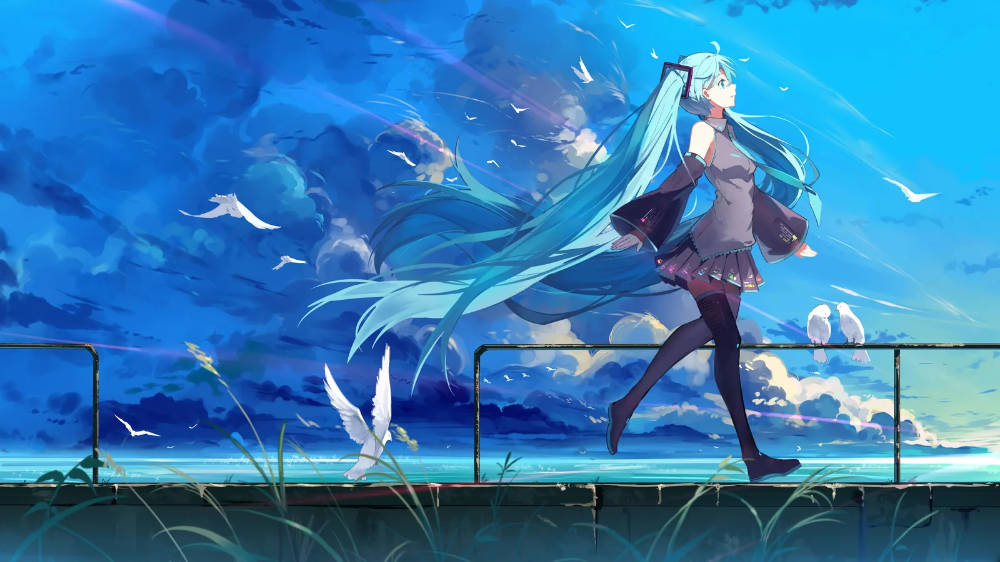

National University of Singapore (NUS)
Visiting Student · School of Computing

I’m a 2024-cohort undergraduate in SUSTech’s Department of Computer Science and Engineering.
Here I share notes from SUSTech courses, reflections on learning and research, and little moments from everyday life.
Life gets busy—and I am a world-class procrastinator—so new posts arrive whenever inspiration wins. Meow.
Visiting Student · School of Computing
Undergraduate · Department of Computer Science and Engineering
University: Southern University of Science and Technology (SUSTech)
Department: Department of Computer Science and Engineering (CSE)
Based in: Shenzhen, China
GitHub: yunli2024
To protect my privacy, I do not publish my full CV or transcript here. Feel free to email me at 12410922@mail.sustech.edu.cn to request them.
My research interests center on computer vision and image editing.
Supervised by: Professor Jianguo Zhang

A fan of VOCALOID and the Girls Band scene.
An amateur marathon runner.